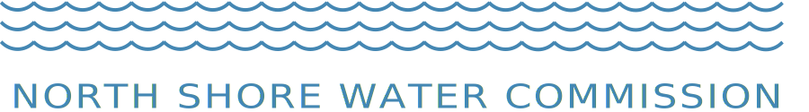
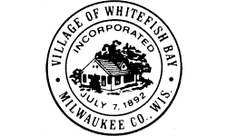

2016 Annual Water Quality Report
This report is available upon request to the public. For a paper copy, please contact your water utility or call (414) 963-0160. In addition to being published in this paper, the URL of the 2016 Annual Water Quality Report will be distributed by mail to water customers within the Village of Fox Point, City of Glendale, and Village of Whitefish Bay.
The North Shore Water Commission, in cooperation with its member utilities, publishes a water quality report annually. The report is designed so you can clearly understand what’s in your drinking water and how to obtain additional information. Thank you for being a valued customer!
North Shore Water Commission
The North Shore Water Commission (NSWC) operates and maintains the Water Filtration Plant at 400 West Bender Road in Glendale as well as the Raw Water Pumping Station located in Whitefish Bay. The NSWC is responsible for purifying and pumping potable water to its member utilities which include Fox Point, Glendale, and Whitefish Bay. Via a wholesale water agreement, water is also provided to some areas served by Mequon Water Utility. If you want to know more about water quality or this report, please contact the Plant Manager at (414) 963-0160 or at info@northshorewc.com.
Water Utility
Your water utility is responsible for connecting customers to the water system, metering, and responding to distribution problems such as main breaks. You can find out who your water utility is by checking your water bill. If you experience a water-related problem or have questions about your water bill, please contact your water utility for assistance.
|  | ||
|---|---|---|
| Fox Point Water Utility | Glendale Water Utility | Whitefish Bay Water Utility |
| (414) 351-8900 | (414) 228-1719 | (414) 962-6690 |
Governance
Fox Point, Glendale, and Whitefish Bay jointly own the facilities of the North Shore Water Commission and share the costs of water production and facility improvements.
The NSWC is governed by three appointed Commissioners and three Alternates with equal representation from Fox Point, Glendale, and Whitefish Bay. Each member is appointed by his/her respective municipality for a term of one year. Annually, the responsibilities of Chairman, Secretary and Member are rotated giving each community equal share of authority.
Under normal circumstances, the NSWC convenes monthly and reviews the operation and maintenance of the water treatment facility as well as water quality concerns. After discussion, the NSWC votes on proposed action, spending, and budgets. Capital improvements, such as the UV disinfection upgrade, must be unanimously approved and financed by the member communities.
Public Meetings
Regular meetings are usually held on the 2nd Wednesday of the month at 8:00 AM in the conference room located at 400 West Bender Road, Glendale. The public is welcome to attend any of our meetings. Please note that they may be held at different times or locations. You can view the agenda at http://northshorewater.org/index.php/meetings to find out more information about past or upcoming meetings. The agenda is typically posted 3 to 5 days prior to a meeting.
More Information About Us
For additional information about water quality on the internet, please visit WDNR’s website at http://dnr.wi.gov/topic/DrinkingWater, the EPA’s web site at http://www.epa.gov/safewater, or our web site at http://www.northshorewater.org. For more information about our member communities visit: http://www.villageoffoxpoint.com, http://www.glendale-wi.org/, and http://www.wfbvillage.org/.
Regulatory Compliance
We are proud to report that our system has not violated a maximum contaminant level or any other water quality standard. The following tables lists the contaminants that were detected. This report may contain up to five years worth of water quality results. If tested annually, or more frequently, the results from the most recent year are shown on this report. If testing is done less frequently, the results are shown from the most recent testing event. Please note that we did not test for cryptosporidium or radon during 2016 because we were not required to.
Monitoring Results Pertaining to the North Shore Water Commission
The NSWC and its member utilities work together to ensure the water it produces meets or exceeds all standards set forth by its regulatory agencies. The following table lists what contaminants were detected from the monitoring assigned specifically to the Commission.
| Substance | MCLG | MCL | 1 Level Found | Compliance | Sources of Contamination |
|---|---|---|---|---|---|
| 2 Coliform (TCR) | 0% positive samples | 5% of monthly samples | 0% | Naturally present in the environment | |
| Antimony | 6 ug/L | 6 ug/L | x ug/L | Discharge from petroleum refineries; fire retardants; ceramics; electronics; solder | |
| Arsenic | NA | 10 ug/L | x ug/L | Erosion of natural deposits; runoff from orchards; runoff from glass and electronics productions wastes | |
| Barium | 2 mg/L | 2 mg/L | x mg/L | Discharge of drilling wasts; discharge from metal refineries; erosion of natural deposits | |
| Chromium | 100 ug/L | 100 ug/L | x ug/L | Discharge from steel and pulp mills; erosion of natural deposits | |
| 3 Copper (2015) | 1.3 mg/L | AL=1.3 mg/L | 0.048 mg/L (0.0034 mg/L to 0.110 mg/L) | Corrosion of household plumbing systems; erosion of natural deposits; leach from wood preservatives | |
| Cyanide | 200 ug/L | 200 ug/L | x ug/L | Discharge from steel/metal factories; discharge from plastic and fertilizer factories | |
| Fluoride | 4 mg/L | 4 mg/L | x mg/L | Erosion of natural deposits; Water additive which promotes strong teeth; discharge from fertilizer and aluminum factories | |
| 4 Lead (2015) | 0 | AL=15 ug/L | 9.1 ug/L (ND to 15 ug/L) | Corrosion of household plumbing systems; erosion of natural deposits. | |
| Nickel | NA | 100 ug/L | x ug/L | Nickel occurs naturally in soils, groundwater and surface waters and is often used in electroplating, stainless steel and alloy products | |
| Nitrate (NO3-N) | 10 mg/L | 10 mg/L | x mg/L | Runoff from fertilizer use; Leaching from septic tanks, sewage; erosion of natural deposits | |
| Sodium | NA | NA | x mg/L | NA |
Footnotes
-
If monitored more than once per year, the highest value and range will be reported unless noted otherwise. ↩
-
No more than 5.0% samples total coliform-positive (TC-positive) in a month. (For water systems that collect fewer than 40 routine samples per month, no more than one sample can be total coliform-positive per month.) Every sample that has total coliform must be analyzed for either fecal coliforms or E. coli if two consecutive TC-positive samples, and one is also positive for E.coli fecal coliforms, system has an acute MCL violaton. ↩
-
WDNR determines when compliance monitoring is to occur. Last compliance monitoring event was during the summer of 2015. Please note that copper does not have a maximum contaminant level. Instead it has an action level. To determine compliance with regulation, all results collected from monitoring event are ranked highest to lowest. The 90th percentile value of that set must at or below the 1.3 ug/L. The "level found" is the 90th percentile value from the latest monitoring event (2015). Ten percent (10%) of the samples were above this value and ninety percent (90%) of the samples were below this value. ↩
Turbidity Monitoring
In accordance with s. NR 810.29, Wisconsin Administrative Code, the treated surface water is monitored for turbidity to confirm that the filtered water is less than 0.30 NTU. Turbidity is a measure of the cloudiness of water. We monitor for it because it is a good indicator of the effectiveness of our filtration system. During the year, the highest single entry point turbidity measurement was 0.09 NTU. The lowest monthly percentage of samples meeting the turbidity limits was 100 percent.
Unregulated Contaminants Monitoring Rule (UCMR3)
EPA periodically requires water systems to test for unregulated contaminants to better understand their occurrence in drinking water. These compounds are not regulated, and therefore, have no additional reporting and/or treatment requirements. Glendale was selected by EPA to conduct this testing in 2013 and Whitefish Bay was selected to do the same from the summer of 2014 to 2015.
The following compounds were tested under UCMR3:
- 1,2,3-trichloropropane
- 1,1-dichloroethane
- 1,3-butadiene
- 1,4-dioxane
- bromochloromethane (Halon 1011)
- bromomethane
- chlorate
- chlorodifluoromethane (HCFC-22)
- chloromethane
- chromium
- chromium-6
- cobalt
- molybdenum
- perfluorobutanesulfonic acid (PFBS)
- perfluoroctanoic acid (PFOA)
- perfluoroheptanoic acid (PFHpA
- perfluorohexanesulfonic acid (PFHxS)
- perfluorononanoic acid (PFNA)
- perfluorooctanesulfonic acid (PFOS)
- strontium
- vanadium
| Term | Abbreviation | Definition |
|---|---|---|
| Action Level | AL | The concentration of a contaminant which, if exceeded, triggers treatment or other requirements which a water system must follow. |
| Not Applicable | NA | Not applicable. |
| Not Detected | ND | Laboratory analysis indicates that the constituent is not present. |
| Milligrams Per Liter | mg/L | One milligram per liter corresponds to one minute in two years or a single penny in $10,000. Parts per million (ppm) is equivalent to this term. |
| Micrograms Per Liter | ug/l | One part per billion corresponds to one minute in 2,000 years, or a single penny in $10,000,000. Parts per billion (ppb) is equivalent to this term. |
| Nephelometric Turbidity Unit | NTU | Nephelometric turbidity unit is a measure of the clarity of water. Turbidity in excess of 5 NTU is just noticeable to the average person. |
| Treatment Technique | TT | A treatment technique is a required process intended to reduce the level of a contaminant in drinking water. |
| Maximum Contaminant Level | MCL | This is the highest level of a contaminant that is allowed in drinking water. MCLs are set as close to the MCLGs as feasible using the best available treatment technology. |
| Maximum Contaminant Level Goal | MCLG | This is the level of a contaminant in drinking water below which there is no known or expected risk to health. MCLGs allow for a margin of safety. |
| Total Coliform Rule | TCR | This is the regulation that pertains to disinfectant and bacteriological monitoring. |
Source Water Assessment
The North Shore Water Commission purifies water from Lake Michigan. The latest evaluation by the Wisconsin Department of Natural Resources (WDNR) indicates our source water quality is susceptible to pollution and contaminants. Preserving the water quality of Lake Michigan is essential to maintaining your drinking water quality. For more information on the impacts to your source of drinking water, see the Source Water Assessment for North Shore Water Commission at http://northshorewater.org/images/materials/SWA-2002.pdf.
Education Information
The sources of drinking water, both tap water and bottled water, include rivers, lakes, streams, ponds, reservoirs, springs and wells. As water travels over the surface of the land or through the ground, it dissolves naturally occurring minerals and, in some cases, radioactive material, and can pick up substances resulting from the presence of animals or from human activity. Contaminants that may be present in source water include the following.
Microbial contaminants, such as viruses and bacteria, which may come from sewage treatment plants, septic systems, agricultural livestock operations and wildlife.
Inorganic contaminants, such as salts and metals, which can be naturally-occurring or result from urban stormwater runoff, industrial or domestic wastewater discharges, oil and gas production, mining or farming.
Pesticides and herbicides, which may come from a variety of sources such as agriculture, urban stormwater runoff and residential uses.
Organic chemical contaminants, including synthetic and volatile organic chemicals, which are by-products of industrial processes and petroleum production, and can also come from gas stations, urban stormwater runoff and septic systems.
Radioactive contaminants, which can be naturally occurring or be the result of oil and gas production and mining activities.
In order to ensure that tap water is safe to drink, EPA prescribes regulations that limit the amount of certain contaminants in water provided by public water systems. Food and Drug Administration regulations establish limits for contaminants in bottled water, which should provide the same protection for public health.
Health Information
Drinking water, including bottled water, may reasonably be expected to contain at least small amounts of some contaminants. The presence of contaminants does not necessarily indicate that water poses a health risk. More information about contaminants and potential health effects can be obtained by calling the Environmental Protection Agency’s safe drinking water hotline at (800) 426-4791. Some people may be more vulnerable to contaminants in drinking water than the general population. Immuno-compromised persons such as persons with cancer undergoing chemotherapy, persons who have undergone organ transplants, people with HIV/AIDS or other immune systems disorders, some elderly, and infants can be particularly at risk from infections. These people should seek advice about drinking water from their health care providers. EPA/CDC guidelines on appropriate means to lessen the risk of infection by cryptosporidium and other microbial contaminants are available from the Environmental Protection Agency’s safe drinking water hotline (800) 426-4791.
Lead Information
If present, elevated levels of lead can cause serious health problems, especially for pregnant women and young children. Lead in drinking water is primarily from materials and components associated with service lines and home plumbing. North Shore Water Commission is responsible for providing high quality drinking water, but cannot control the variety of materials used in plumbing components. When your water has been sitting for several hours, you can minimize the potential for lead exposure by flushing your tap for 3 minutes before using water for drinking or cooking. If you are concerned about lead in your water, you may wish to have your water tested. Information on lead in drinking water, testing methods, and steps you can take to minimize exposure is available from the Safe Drinking Water Hotline or at www.epa.gov/safewater/lead.
Treatment Process
The plant is a conventional water treatment facility that starts with a single intake in Lake Michigan which is approximately 4,000 feet offshore. Water enters the intake through 3 inverted cones that are protected with bar screens and a mussel control system.
Water travelling through the intake passes a traveling screen upon arriving at the shore—the location of the Klode Park Station. Gravity forces the water to fill a large shorewell that has 4 raw water pumps submersed in it. Lake water is pumped from this station to the Bender treatment plant which is nearly a mile away in Glendale. Raw water is conveyed from station to station via transmission main.
Upon arriving at the Bender treatment plant, aluminum sulfate (alum) and polymer are added to promote settling of solids. This water then travels very slowly through a system of 5 rectangular basins that provide a location for particulate matter to accumulate.
Eight rapid sand filters remove remaining particulate matter and clean water is stored in a clearwell below the filters. There are 3 intermediate pumps (sometimes referred to as transfer or low lift pumps) which force the filtered water through the fully redundant ultraviolet (UV) disinfection system which inactivates pathogens such as cryptosporidium. Before going into the UV reactors, fluoride is added to prevent tooth decay. After the UV reactors, sodium hypochlorite (a form of chlorine) is used to disinfect any remaining pathogens.
Underground piping directs the water to our 4 below-grade clearwells (historically they have been referred to as our "reservoirs") that provide approximately 7 million gallons of storage capacity. While in the clearwells, water continues to react with chlorine so that proper disinfection is achieved.
Water is drawn out of the clearwells with our 5 high service pumps. Underground piping directs the water to a chemical feed vault that allows for the addition of ammonium hydroxide (also referred to as aqua ammonia) and phosphate. The ammonium hydroxide converts the chlorine to another disinfectant, chloramine, that is used by neighboring communities and is can reduce disinfection byproducts. Phosphate is also added at this point to reduce lead and copper leaching within premise plumbing.
The high service pumps deliver potable water to its members through metering pits located on the grounds of the Bender facility. There are several interconnections between members that the NSWC monitors; however, the bulk of the water stays within each member’s system after initial delivery.
Below is a diagram of our process. If you have problems viewing this image, click here.

Staff
Eric Kiefer has been the Plant Manager since 2007. He received a Bachelor of Science degree with a major in chemistry from the University of Wisconsin Oshkosh as well as a Master of Business Administration degree from Marquette University. All full-time staff that participate in operations, including Mr. Kiefer, have a WDNR Municipal Waterworks Operator Certification.
Officials
| Office | Office Holder | Representing | Phone | |
|---|---|---|---|---|
| Chairman | John Edlebeck | Whitefish Bay | j.edlebeck@wfbvillage.org | (414) 962-6690 |
| Alternate | Paul Boening | Whitefish Bay | p.boening@wfbvillage.org | (414) 962-6690 |
| Secretary | Michael West | Fox Point | (414) 352-2712 | |
| Alternate | Scott Botcher | Fox Point | sbotcher@villageoffoxpoint.com | (414) 351-8900 |
| Member | Dave Eastman | Glendale | d.eastman@glendale-wi.org | (414) 228-1746 |
| Alternate | Rachel Reiss | Glendale | R.Reiss@glendale-wi.gov | (414) 228-1703 |
| Fiscal Agent | Linda DiFrances | Glendale | L.DiFrances@glendale-wi.gov | (414) 228-1701 |
| Plant Manager | Eric Kiefer | Commission | ekiefer@northshorewc.com | (414) 963-0160 |
Please note that officers from the member communities rotate positions annually at the May meeting.
Associations
The NSWC is a proud member of the following associations:
| Association | |
|---|---|
| American Water Works Association | |
| Wisconsin Water Works Association | |
| The Water Council | |
| Water Research Foundation | |
| West Shore Water Producers Association |